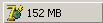
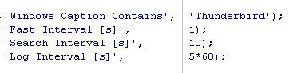
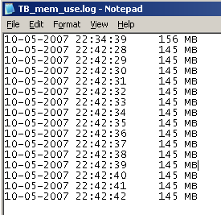

may 2007
Memory Use of an Application
Having trouble with extreme memory usage of some programs, I wrote a little program, that shows the memory usage continuously in the taskbar. The measured values can also be written to an incremental log file. You can have more than one instance of the program running (e.g. in case you want to watch more programs), by making copies of the program in different directories (the program uses an ini-file and log-file with it's own name, in it's own directory)
The program itself, uses 1.5 MB.
The program can be downloaded here (if someone wants the sources, Delphi, just ask me)
After the program is started and found the program it should watch, you see the following icon in the taskbar:

When the program to be watched disappears (or can't be found), the icon changes to:
You can set the program to be watched and the desired timing parameters in an inifile, with the same name as the program, but with the extension ".ini". The parameters and default values are given in the following picture, section = "General",

If the log interval is zero, no logging takes place. The log file has the same name and is placed in the same directory as this program, except the extension is ".log".
An example of the log file:
